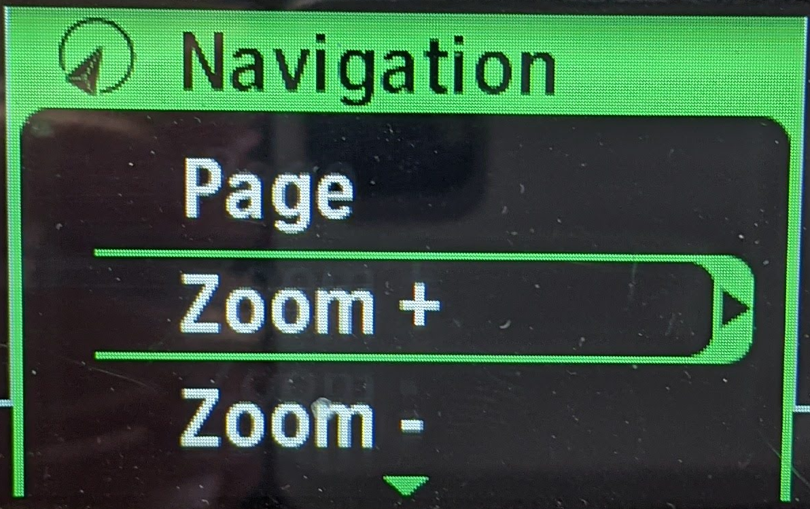
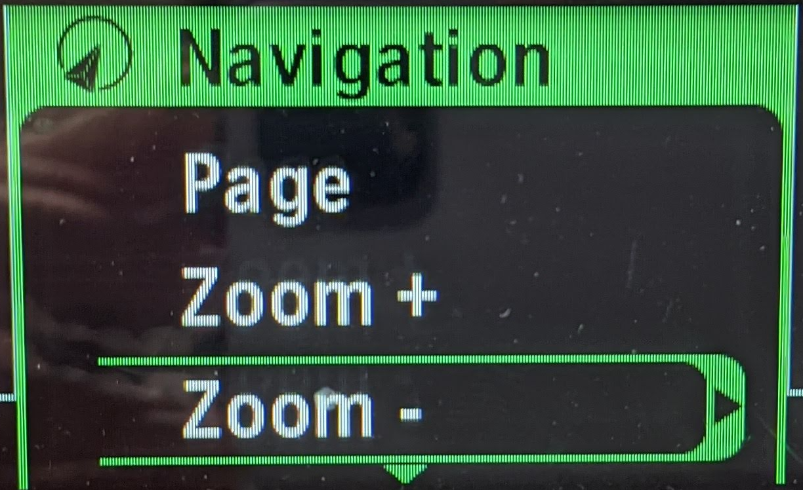
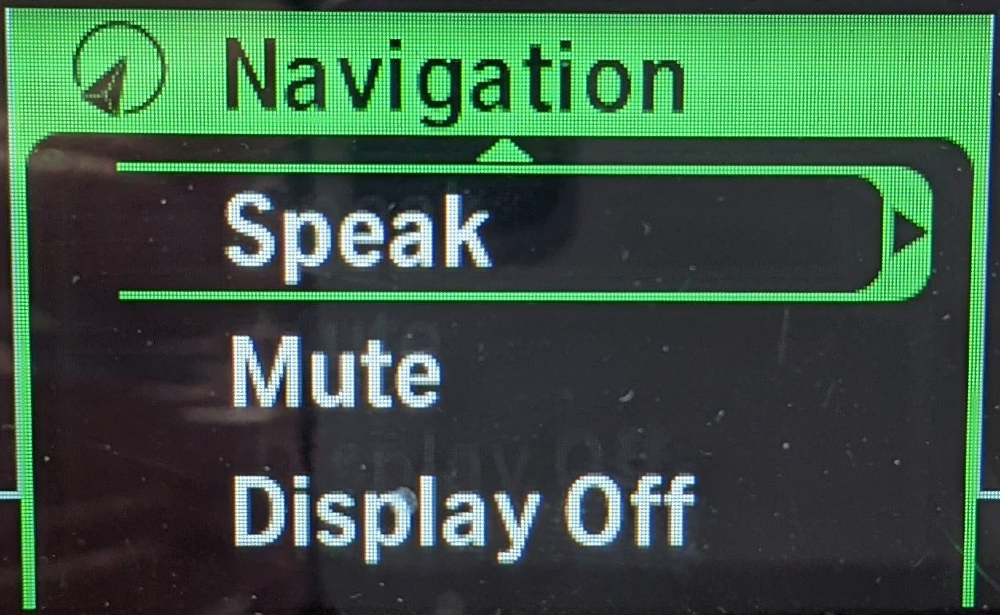
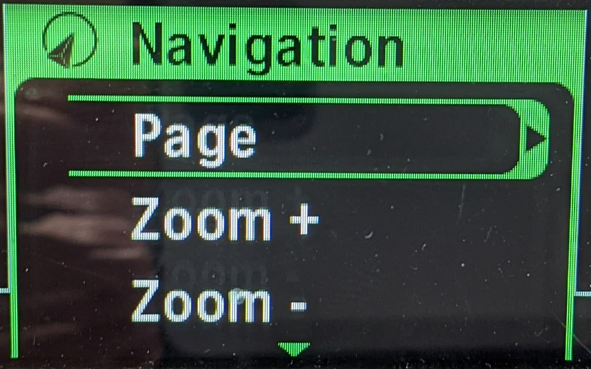
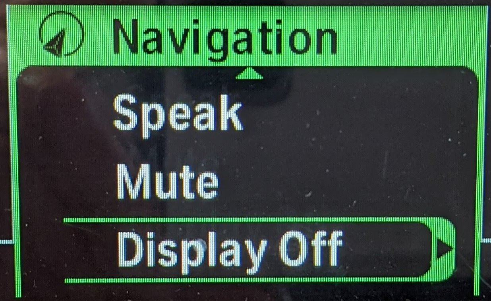
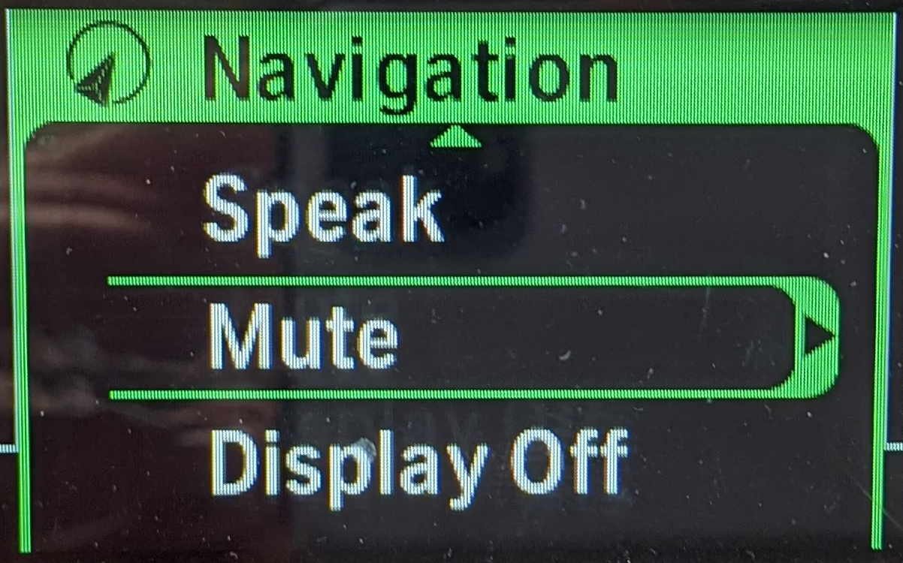
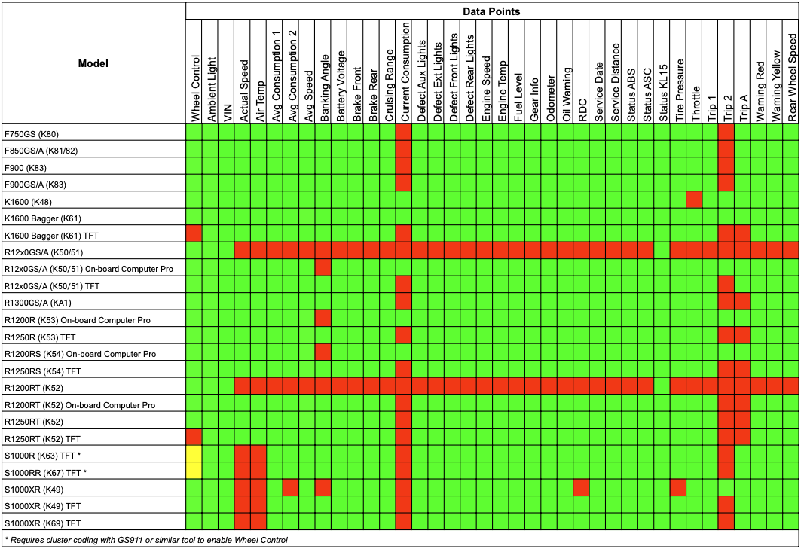

WunderLINQ Navigator Documentation
Version 1.0
Introduction
First of all, Thank you for your purchase. The WunderLINQ was designed for riders by riders.
This documentation covers the install and usage of the WunderLINQ hardware on your motorcycle. Please review the document completely before attempting the install.
Requirements
You will need the following to install this hardware on your motorcycle.
- WunderLINQ
- BMW Motorcycle with Navigation Preperation
For performance and fault data your motorbike must have the option On-board Computer Pro.
Install

Locate the Nav cradle. If installed remove the cradle cover to expose the pins.

Place the bottom of the WunderLINQ into the cradle lip and then firmly snap the WunderLINQ in.

Once the WunderLINQ has been snapped in, lock it in place by sliding this arm all the way in.

If you don't have a locking cradle, make sure the WunderLINQ is full seated. You should not see any red exposed like shown in this photo.

When the bike ignition is turned on the WunderLINQ LED will flash green for a moment and then switch to a flashing blue color. This indicates the WunderLINQ is ready to pair with your mobile device.
Please remove your WunderLINQ Navigator when not in use, this will reduce the spring fatigue on the cradle pogo pins.
This video covers the install of the WunderLINQ Navigator.
WunderLINQ App
Now that the WunderLINQ hardware is installed, test and setup your hardware with the WunderLINQ App. Please see our app documentation at the following link for more information.
Usage Notes
Below is the default mapping between Wunder Wheel input and keyboard input. If you are using the WunderLINQ with an RT or K1600 view the mappings at the end of this section.

| Hand Controls | Keyboard Key | |
|---|---|---|
| Scroll Wheel Up | UP Arrow | |
| Scroll Wheel Down | DOWN Arrow | |
| Wheel Left | LEFT Arrow | |
| Wheel Right | RIGHT Arrow | |
| Wheel Left Long Press | ESCAPE | |
| Wheel Right Long Press | ENTER | |
| Indicator Cancel | iOS Keyboard Toggle | WunderLINQ Navigator V2 or greater |
| Indicator Cancel Long Press | Phone Mute |
If your bike is equipped with a TFT instrument cluster, please see the notes below.

If your bike is equipped with a TFT instrument cluster, you will see a message on the TFT once the WunderLINQ has been inserted into the cradle.

The TFT indicates which device currently has wheel focus in the upper left-hand corner once the WunderLINQ has been detected. Switching the wheel focus to the WunderLINQ by changing the mode to Nav by long-pressing the Menu button UP.

To switch wheel focus back to the TFT, press the Menu button down
Below is the mapping between Wunder Wheel input and keyboard input on RT and K1600.
| Hand Controls | Keyboard Key | ||
|---|---|---|---|
 |
Zoom+ | UP Arrow | |
 |
Zoom- | DOWN Arrow | |
 |
Speak | LEFT Arrow | |
 |
Page | RIGHT Arrow | |
| Speak Double Click | ESCAPE | ||
| Page Double Click | ENTER | ||
 |
Display Off | iOS Keyboard Toggle | |
 |
Mute | Phone Mute |


If your motorbike has a TFT instrument cluster, you must put it in Nav mode or Nav menu on the RT/K1600, to pass the wheel presses to the cradle.
Compatibility
The WunderLINQ is designed to work with BMW motorcycles that have the BMW Multi Function Controller (WW), On-Board Computer Pro option and fitted with the Navigation Prep option. Essentially, any BMW motorcycle equipped to utilize the BMW Nav 5/6 GPS units will work with the WundeLINQ. To confirm your bike has these options please check your bikes build sheet via a VIN lookup app/site. In general most BMW motorcycles manufactured post 2013 have the aforementioned options. How these options are implemented and ultimately how the WunderLINQ will function is dependent on the model/year. Please see the list of Model/Year function notes.
Please note only the official BMW Navigation Prep cradle is supported.
Model/Year Function Notes
R1200GS/R1250GS/R1300GS
2013- Wheel Control
- Full data
- Wheel Control
- Full data
R1200RS/R1200R/R1250RS/R1250R
2015-Current- Wheel Control
- Full data
F750/F850/F900
All model years- Wheel Control
- Full data
S1000XR
2015–2019- Wheel Control
- Full data
- Wheel Control
- Full data
S1000R/RR TFT
2019-Current- Wheel Control, requires enabling with GS911 or similar tool
- Full data
R1200RT/R1250RT/K1600
2013-2017- Wheel Control
- Full data
- Wheel Control
- Full data
- No Wheel Control
- Full data
Data Point Availability Matrix


Firmware Updating
The WunderLINQ-DFU app updates the firmware that runs on WunderLINQ hardware. Use it when a release adds a feature or fixes an issue relevant to your unit. Download the app from the Apple App Store or Google Play.
Keep the motorcycle and WunderLINQ powered, keep the phone nearby, and do not force-close the app or disable Bluetooth while an update is running.
Find the WunderLINQ

Turn on the WunderLINQ, enable Bluetooth, and open WunderLINQ DFU. Grant nearby-device permission when requested. Select the nearby WunderLINQ shown in the discovery list. The device row reports its signal strength and whether it is ready to enter update mode.

Use Rescan when the unit is not listed. Settings and About are available from the overflow menu. After selection, the app automatically requests update mode when necessary and reconnects to the device.
Choose firmware

Once connected, the app identifies the hardware and loads firmware releases intended for that unit. Review the available versions and select the release you want to install.

After the download finishes, verify the selected filename and file size before choosing Install Firmware. Use a local file only when it comes from WunderLINQ support or another trusted WunderLINQ source.
Install and verify the update

Choose Install Firmware and keep the app in the foreground. Navigation is disabled while programming is active. Do not remove power, move the phone away, or switch to another WunderLINQ app.

Wait for the green confirmation and Update complete. Allow the WunderLINQ to restart before opening the main WunderLINQ app or switching off the motorcycle.
Settings and About

Settings controls appearance and the production or beta firmware channel. Leave beta firmware disabled for normal production updates unless support asks you to enable it.

About shows the installed DFU app version and support links. Include that version, the selected firmware filename, and any complete error message when contacting support.
Troubleshooting
Solid Blue/Green LED or No LED
If the WunderLINQ unit’s LED immediately goes solid green/blue or doesn’t light at all on insertion the unit has failed and must be replaced.
Additional Information
Firmware
Support
Other Links
WunderLINQ Documentation Source Code
Disclaimer
WARNING: The use of the WunderLINQ, a product manufactured by Black Box Embedded, LLC, on your motorcycle is at your own risk. This product is intended for off-road use only and should not be used on public roads or highways. Black Box Embedded, LLC shall not be liable for any damages, injuries, or harm caused by the use of this product. By using this product, you acknowledge and accept the risks associated with its use, and you agree to waive any claims you may have against Black Box Embedded, LLC for any damages, injuries, or harm caused by the use of this product. This product is intended for use by experienced riders only and should not be used by beginners or inexperienced riders. Always exercise caution and ride responsibly.
WunderLINQ products should always be installed by a qualified technician. If you are unsure of your ability to properly install a product, please have the product installed by your local motorcycle technician. Black Box Embedded, LLC takes no responsibility for damages caused by improper installation. WARNING: When installing electronics it is extremely important to pay close attention to how wires are routed, especially when mounting products to the front fender, front fork, or fairing of your motorcycle. Always be sure to turn the handlebars full left, and full right, and fully compress the suspension to ensure the wires will not bind and have enough slack for your motorcycle to operate properly.